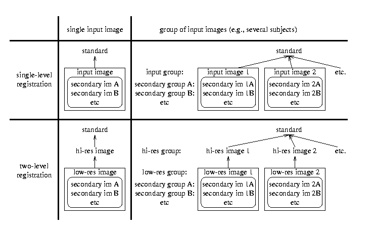

Flirt GUIs
|  |
AVAILABLE GUIs
FLIRT comes with a main GUI as well as three supporting guis:
- ApplyXFM - for applying saved transformations and changing FOVs
- InvertXFM - for inverting saved transformations
- ConcatXFM - for concatenating saved transformations
These support GUIs are self-explanatory and perform functions that
are detailed in the command line versions.
Only the main FLIRT GUI is described in the rest of this page.
MAIN FLIRT GUI
MAIN OPTIONS
The simplest use of FLIRT is to register two single volumes together.
This is done by choosing the Input image -> Reference image mode
in the top box, then filling in the Reference image and
Input image boxes with the appropriate images. The result is a
registered image which will be saved to the location specified in the
Output image box. All other options/boxes can be left at
their default values.
The second mode of operation is a two stage registration which
takes an input Low res image and two target images. It
initially registers the low res image to a High res image and
then registers this high res image to the final Reference
image. The two resulting transformations are concatenated and
then applied to the original low res image to create an Output
image that is a version of the low res image transformed
(resliced) to the reference image space.
Secondary Images
Apply the estimated transform to other (secondary) images, which were
originally aligned with the input/low-res image, in order to align them
with the reference image.
Model/DOF
Restrict the transformation type. For 3D to 3D mode the DOF can be
set to 12 (affine), 9 (traditional), 7 (global rescale) or 6 (rigid
body). In 2D to 2D mode only 3 DOF (rigid body) transformations are
allowed.
ADVANCED OPTIONS
The four categories of options are:
- Search - select the angular range over which the initial
optimisation search stage is performed.
- Cost Functions - select the desired cost function from a
range of inter- and intra-modal functions.
- Interpolation - select the interpolation method to be used
in the final (reslice) transformation (it is not used for the estimation
stage - trilinear interpolation is always used for the
estimation of the transformation). The options for this final
interpolation method are: Tri-Linear; Nearest Neighbour and Sinc. If
Sinc is chosen, further window parameters (type of windowing function
and window width) can also be specified.
- Weighting Volumes - impose voxel-wise weighting to
reference and/or input images, to affects the cost function. The
weighting images must be the same size as the image they are weighting
(e.g. refweight and reference images) and the voxel values of the
weighting image represent how much weighting that particular voxel is
given in the cost function. Therefore, by setting weights to zero,
some areas of the image can be effectively ignored, which is useful in
masking out pathologies so that they do not affect the registration.
In this way very accurate registrations can be made between
pathological and ``normal'' images. This cannot be achieved by
masking the images prior to registration, as that induces artificial
boundaries which bias the registration. Furthermore, some areas can
be given extra weighting (such as the ventricles) so that the
registration is most accurate near these structures, but still uses
information from the rest of the image (e.g. the cortical surface) to
improve the robustness of the registration.

Mark Jenkinson
FMRIB Image Analysis Group
Copyright © 1999-2000, University of Oxford